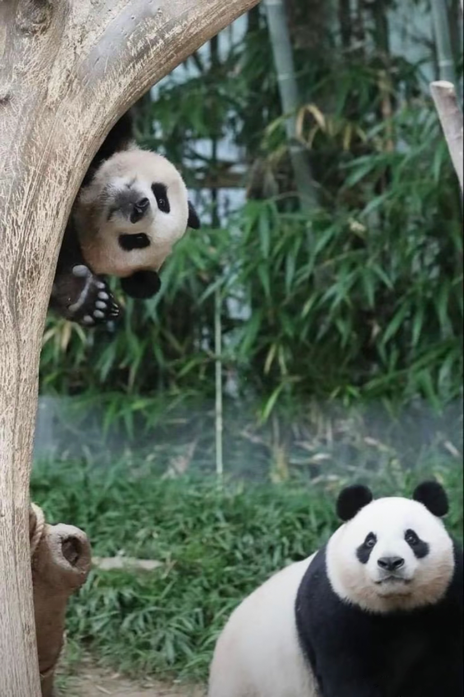

<!DOCTYPE html>
<html lang="en">

<head>
    <meta charset="UTF-8">
    <meta name="viewport" content="width=device-width, initial-scale=1.0">
    <title>Document</title>
    <style>
        /* 数值越大图片越模糊 */
        /* img{  
            filter: blur(5px);
        } */

        .box {
            /* filter: blur(5px); */
            position: relative;
            /* display: inline-block; */
            /* background-color: aqua; */
        }

        /* 3、开发中常用的效果，添加遮盖层 */
        .cover {
            position: absolute;
            left: 0;
            right: 0;
            top: 0;
            bottom: 0;
            background-color: rgba(0, 0, 0, .8);
            backdrop-filter: blur(5px);
        }
    </style>
</head>

<body>
    <!-- 1、直接给图片加模糊效果 -->
    <!--  -->

    <!-- 2、把模糊效果给图片外的盒子;给父元素添加高斯模糊，其中的所有子元素都会有模糊效果 -->
    <div class="box">
        

        <!-- 3、开发中常用的效果，添加遮盖层 -->
        <div class="cover"></div>
    </div>
</body>

</html>